Apxe Phổi
Nguồn: Xray.vn — xray.vn/apxe-phoi
I. Đại cương
– Định nghĩa:
+ Áp xe phổi (lung abscess) là vùng hoại tử hóa lỏng của nhu mô phổi do nhiễm khuẩn, thường tạo hang trên 2 cm chứa mủ, dịch và mảnh hoại tử; phần lớn liên quan đến hít sặc dịch hầu họng và nhiễm khuẩn đa vi sinh vật, gồm vi khuẩn kỵ khí khoang miệng và liên cầu vi hiếu khí.
+ Không gọi ổ nhiễm khuẩn trong tổn thương hang hoặc khoang có sẵn là áp xe phổi; cần phân biệt với giãn phế quản dạng túi, kén khí bội nhiễm và hang lao.
– Cơ chế bệnh sinh: Hít sặc dịch hầu họng, nhất là khi rối loạn ý thức, có thể gây viêm phổi khu trú rồi hoại tử hóa lỏng; khi ổ thông với phế quản, khí vào hang và mủ thoát ra, tạo mức khí–dịch.
– Đặc điểm mô bệnh học:
+ Thể cấp có hoại tử trung tâm chứa mảnh hoại tử, bạch cầu đa nhân trung tính và vi khuẩn; mô xung quanh có sung huyết, giãn mạch và phù viêm.
+ Thể mạn có màng sinh mủ; mô liên kết quanh ổ chứa lympho bào, tương bào, mô bào và xơ hóa.
– Vị trí: Trong áp xe do hít sặc, thường gặp ở phân thùy sau thùy trên phải và phân thùy đỉnh thùy dưới; khoảng 75% trường hợp nằm ở một trong các vị trí này, giúp định hướng đọc phim.
– Dịch tễ:
+ Tỷ lệ nam/nữ được báo cáo khoảng 3/1–6/1, nhưng thay đổi theo quần thể.
+ Tuổi trung bình được báo cáo dao động khoảng 43–60 tuổi; bệnh thường gặp ở người trưởng thành có yếu tố nguy cơ hít sặc.
– Hình thái lâm sàng:
+ Thể cấp (acute lung abscess) kéo dài dưới 6 tuần, ranh giới với nhu mô xung quanh thường chưa rõ và thường đáp ứng với điều trị nội khoa.
+ Thể mạn (chronic lung abscess) kéo dài trên 6 tuần, thường có màng sinh mủ và xơ hóa quanh ổ; đáp ứng điều trị nội khoa kém hơn và có thể cần can thiệp khi không cải thiện.
– Phân loại:
+ Áp xe nguyên phát (primary lung abscess) thường liên quan đến hít sặc dịch hầu họng; có thể xuất hiện cùng viêm phổi hoại tử hoặc suy giảm miễn dịch, không do tắc nghẽn phế quản nền; ước tính chiếm khoảng 60%.
+ Áp xe thứ phát (secondary lung abscess) liên quan đến tắc nghẽn phế quản, bệnh phổi đồng mắc, lan theo đường máu từ nhiễm khuẩn huyết hoặc lan trực tiếp qua cơ hoành từ ổ bụng.
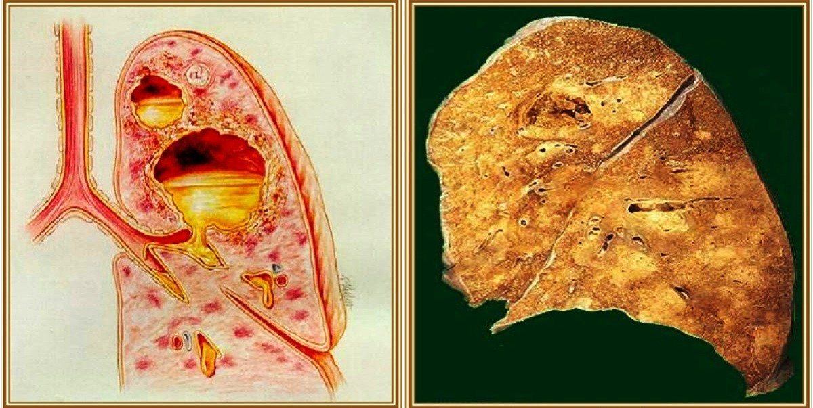
© Chẩn Đoán Hình Ảnh Xray.vn
II. Nguyên nhân
* Áp xe phổi đường phế quản
– Cơ chế: Áp xe phổi đường phế quản (bronchogenic lung abscess) hình thành khi hít sặc dịch hầu họng nhiễm khuẩn hoặc khi tắc nghẽn phế quản làm cản trở dẫn lưu, dẫn đến viêm và hoại tử nhu mô phổi.
– Hoàn cảnh thuận lợi:
+ Hít sặc dịch hầu họng nhiễm khuẩn; nguy cơ tăng sau phẫu thuật đường hô hấp trên, khi viêm xoang, nôn hoặc trào ngược dạ dày–thực quản.
+ Rối loạn ý thức, vệ sinh răng miệng kém, nghiện rượu và dùng thuốc an thần.
– Đối tượng: Có thể gặp ở người cao tuổi, đặc biệt khi mắc viêm phế quản mạn tính hoặc giãn phế quản.
* Áp xe phổi đường máu
– Đặc điểm chung:
+ Áp xe phổi đường máu (hematogenous lung abscess) thường liên quan đến thuyên tắc nhiễm khuẩn, có thể do Staphylococcus aureus; tổn thương thường đa ổ, hai bên và ưu thế ngoại vi, đôi khi biến chứng viêm mủ màng phổi.
+ Tổn thương có thể phân bố ở nhiều thùy, không ưu thế tại các phân thùy phụ thuộc như áp xe do hít sặc.
– Thuyên tắc nhiễm khuẩn (septic pulmonary embolism):
+ Nguồn thường gặp gồm viêm nội tâm mạc nhiễm khuẩn bên phải, catheter hoặc thiết bị nội mạch nhiễm khuẩn và tiêm chích ma túy.
+ Nhồi máu phổi do thuyên tắc nhiễm khuẩn có thể hoại tử; hiếm khi tiến triển thành áp xe.
– Lưu ý amip: Áp xe phổi do Entamoeba histolytica thường do ổ áp xe gan lan trực tiếp qua cơ hoành; lan từ tổn thương nguyên phát ở ruột theo đường máu cũng có thể xảy ra nhưng ít gặp hơn.
* Áp xe phổi do viêm phổi
– Cơ chế: Áp xe hình thành từ ổ hoại tử trong viêm phổi hoại tử (necrotizing pneumonia), thường liên quan đến Staphylococcus aureus, các loài Streptococcus và Klebsiella pneumoniae.
– Yếu tố thuận lợi:
+ Sau cúm, tổn thương biểu mô đường thở và giảm thanh thải niêm dịch làm tăng nguy cơ bội nhiễm vi khuẩn, có thể tiến triển thành viêm phổi hoại tử.
+ Chấn thương xuyên thấu có mảnh đạn hoặc dị vật tồn lưu có thể gây nhiễm khuẩn thứ phát và hình thành áp xe.
* Áp xe do nhiễm khuẩn qua cơ hoành
– Đường lan trực tiếp: Thường do áp xe gan, đặc biệt là áp xe gan do amip, hoặc ổ nhiễm khuẩn dưới cơ hoành; sau viêm túi mật, nhiễm khuẩn có thể lan lên phổi nếu hình thành ổ dưới cơ hoành.
– Ổ bụng dưới cơ hoành: Áp xe dưới cơ hoành do viêm ruột thừa hoặc thủng ổ loét hành tá tràng có thể lan lên phổi.
III. Chẩn đoán x-quang
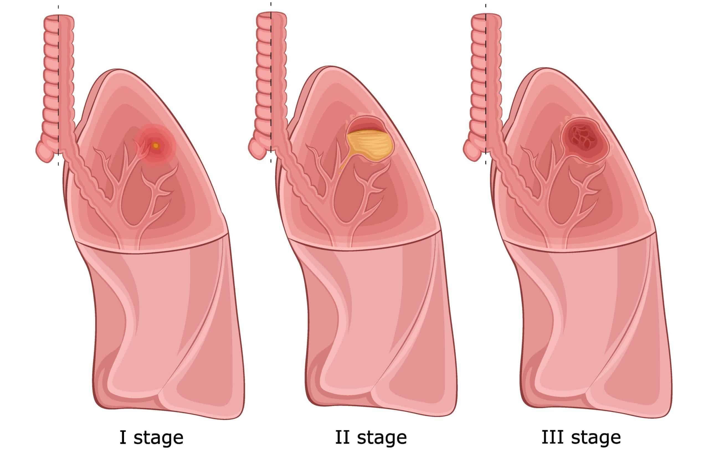
* Gđ chưa hóa mủ
– Khởi phát: Có thể bắt đầu bằng viêm phổi khu trú; các ổ hoại tử nhỏ trong nhu mô hợp lưu dần trước khi hình thành hang.
– Đặc điểm hình ảnh:
+ Đám đông đặc (consolidation) đậm độ tương đối đồng nhất, bờ không rõ.
+ Kích thước thay đổi, có thể đạt 7–10 cm.
– Cơ chế tạo hình ảnh: Dịch viêm và tế bào viêm lấp đầy phế nang tạo đám mờ; trước khi hình thành hang và thông với phế quản, thường chưa thấy khí trong tổn thương hoặc mức khí–dịch.
– Phân biệt và cạm bẫy:
+ Lao phổi (pulmonary tuberculosis): Đám mờ vùng đỉnh hoặc dưới đòn có thể giống lao thâm nhiễm; nốt vệ tinh, xơ co kéo hoặc diễn tiến bán cấp giúp gợi ý lao hơn.
+ Viêm phổi khu trú (focal pneumonia): Có thể không phân biệt được ở lần chụp đầu; đám đông đặc thu nhỏ khi theo dõi ủng hộ viêm phổi, còn hình thành hang hoặc mức khí–dịch gợi ý áp xe.
+ Cạm bẫy: Bờ không rõ, chưa thấy hang và bệnh cảnh viêm cấp chỉ gợi ý quá trình viêm; cần theo dõi để phát hiện hình thành hang hoặc mức khí–dịch.
=> Case lâm sàng 1:
=> Case lâm sàng 2:
* Gđ vỡ mủ
– Cơ chế: Áp xe vỡ vào phế quản lớn làm mủ thoát ra, khí đi vào hang và tạo mức khí–dịch (air-fluid level).
– Đặc điểm hình ảnh:
+ Hang thường tròn, chứa khí và dịch; mức khí–dịch có mặt phân cách ngang, khí ở trên và dịch ở dưới.
+ Thành hang thường dày, độ đều thay đổi; đông đặc viêm quanh ổ có thể làm bờ ngoài khó xác định.
– Kỹ thuật chụp: Mức khí–dịch được bộc lộ tốt nhất khi chụp tư thế đứng, ngồi hoặc nằm nghiêng với tia ngang.
– Cạm bẫy:
+ Ổ nhỏ, thành không đều hoặc bị đông đặc xung quanh che lấp khó nhận diện hơn ổ lớn, bờ rõ.
+ Mức khí–dịch thay đổi theo tư thế; phim nằm ngửa trước–sau dễ bỏ sót nếu không có tia ngang.
– Diễn tiến: Trong đợt cấp, đông đặc viêm quanh hang có thể lan rộng, làm bờ ngoài tổn thương kém rõ.


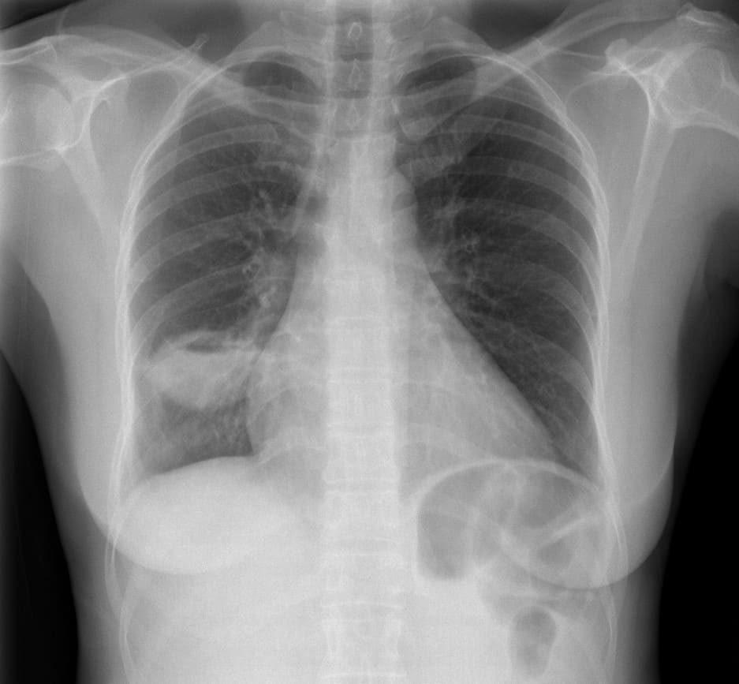
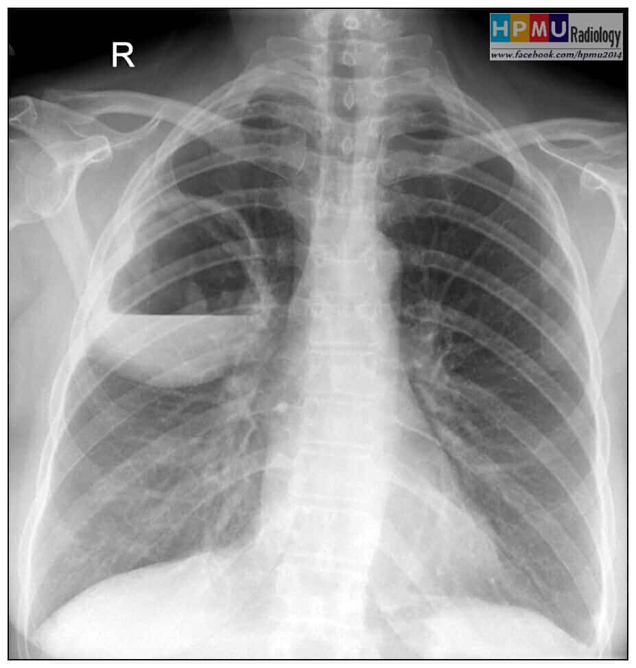
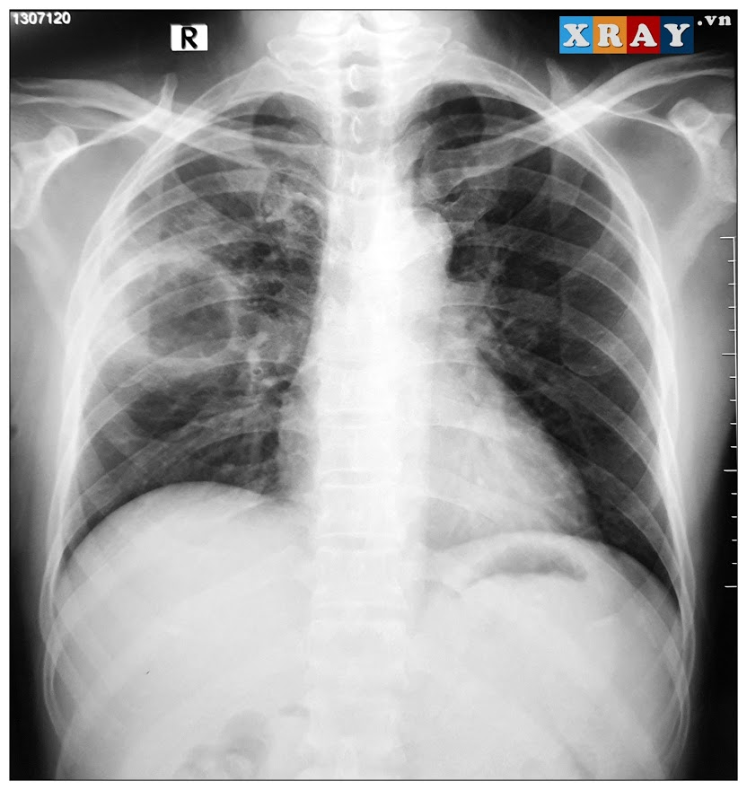
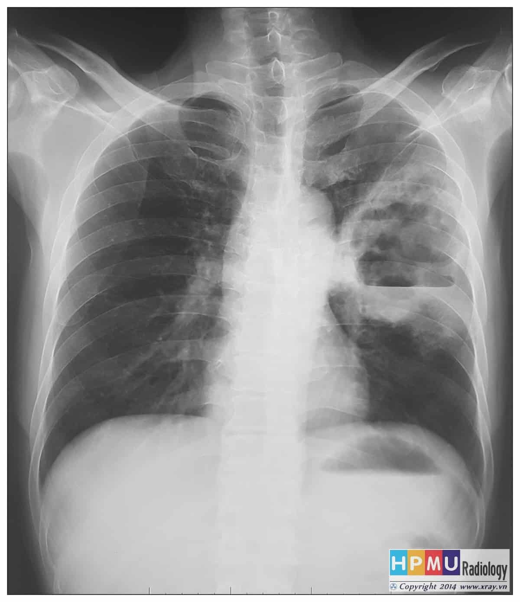
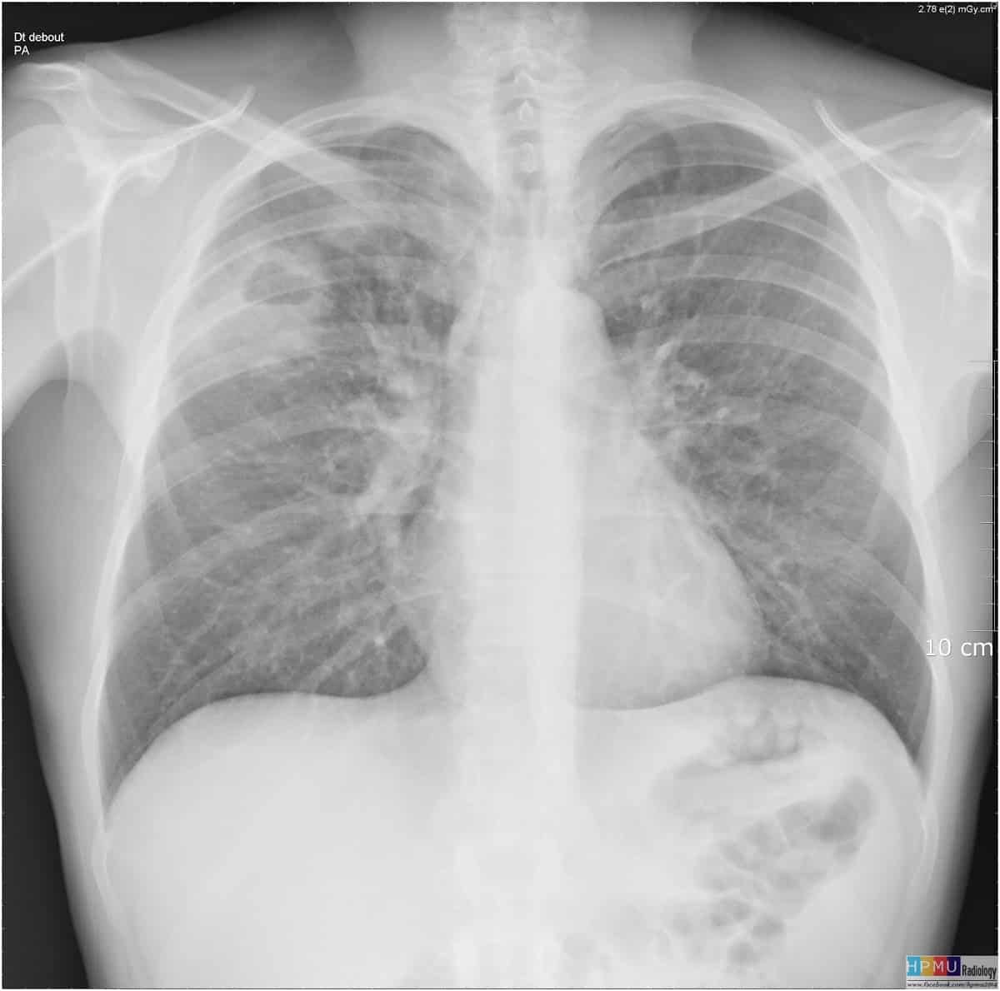
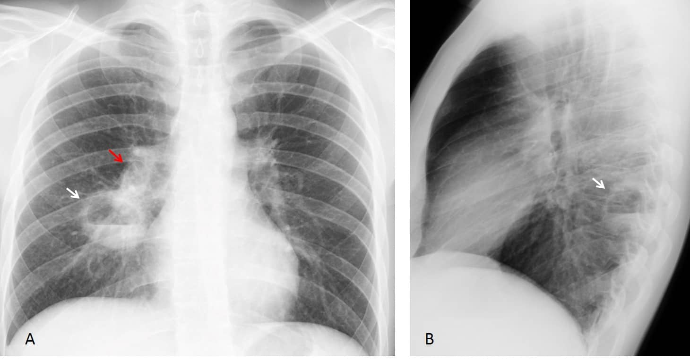
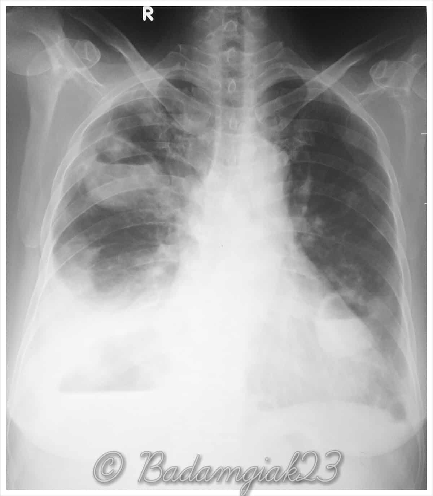
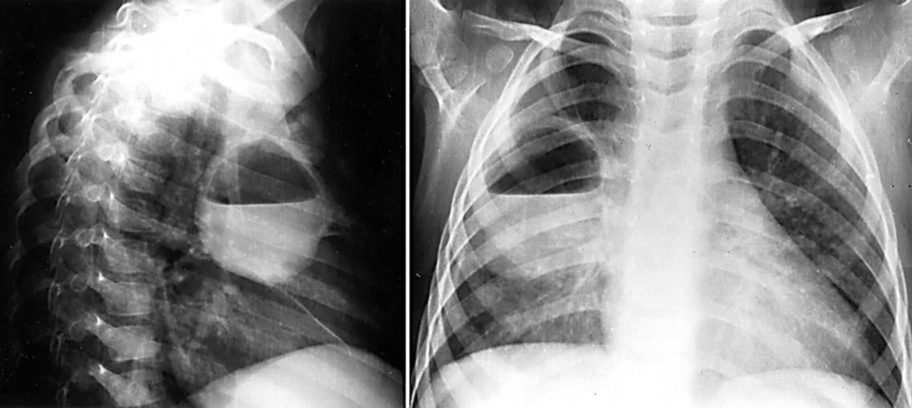
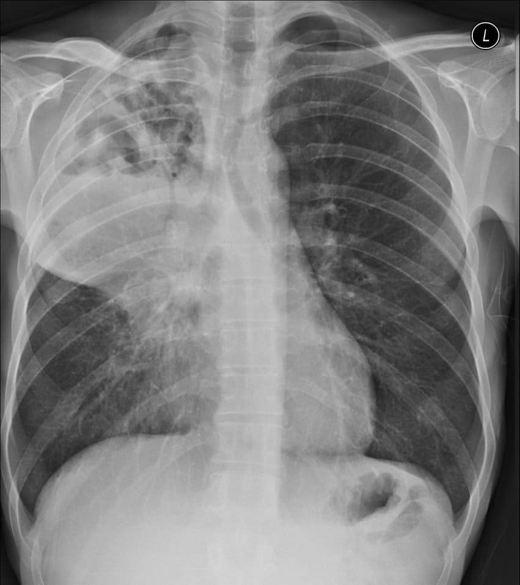
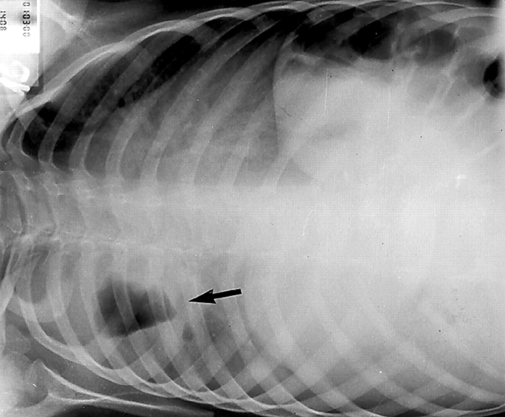
=> Case lâm sàng 1:
=> Case lâm sàng 2:
=> Case lâm sàng 3:
=> Case lâm sàng 4:
=> Case lâm sàng 5:
* Gđ thành hang
– Ổ nhỏ: Ổ nhỏ thường co lại hoàn toàn hoặc để lại sẹo nhỏ ổn định; phim X-quang thường cần 3–6 tuần hoặc lâu hơn để thoái triển.
– Ổ lớn:
+ Hang tồn lưu có thể tròn, thành mỏng tương đối đều và bờ rõ; xơ hóa quanh ổ thường ít sau khi viêm lui.
+ Nhu mô phổi xung quanh có thể gần trở về bình thường khi quá trình viêm thoái triển.
+ Hang lớn thường thu nhỏ chậm và tồn tại lâu hơn ổ nhỏ.
IV. Chẩn đoán siêu âm
– Chỉ định: Siêu âm chủ yếu đánh giá được ổ ngoại vi áp sát màng phổi hoặc thành ngực khi nhu mô đông đặc tạo cửa sổ siêu âm; nhu mô còn thông khí xen giữa cản trở quan sát.
– Giai đoạn sớm:
+ Đông đặc giảm âm dạng gan hóa, bờ có thể không rõ.
+ Ở cấp độ vi cấu trúc, phế nang chứa dịch viêm nhưng chưa có hoại tử hóa lỏng tạo ổ dịch.
– Giai đoạn tiến triển:
+ Trong vùng đông đặc, ổ áp xe thường tròn, giới hạn rõ, giảm âm hoặc trống âm, đôi khi có hồi âm lẫn; có tăng âm phía sau (posterior acoustic enhancement) và không có tính đập theo nhịp trên Doppler màu.
+ Bóng khí trong ổ tạo chấm hoặc đường tăng âm và bóng lưng bẩn (dirty shadowing), có thể che khuất phần sâu; mặt phân cách khí–dịch (air-fluid level) hoặc vị trí bóng khí có thể thay đổi theo tư thế.
– Cạm bẫy:
+ Viêm mủ màng phổi khu trú nằm trong khoang màng phổi, thường có dạng thấu kính; áp xe nằm trong nhu mô đông đặc.
+ U phổi hoại tử có thể giả ổ dịch; thành phần đặc ở thành hoặc nốt thành cần đánh giá thêm bằng CLVT vì siêu âm có thể không phân biệt chắc chắn.
+ Khí cản âm che tổn thương nằm sâu hoặc có nhu mô thông khí xen giữa; thay đổi cửa sổ và góc đầu dò có thể cải thiện quan sát.
V. Chẩn đoán CLVT
– Hình dạng và số lượng: Ổ áp xe thường tròn, kích thước thay đổi, đơn độc hoặc nhiều ổ.
– Nhu mô xung quanh: Đông đặc quanh ổ có thể gặp; một số tổng hợp nêu khoảng 50%, nhưng tỷ lệ thay đổi và dấu này không đặc hiệu. Khi phù hợp bối cảnh, đông đặc quanh ổ có thể giúp phân biệt với kén khí bội nhiễm.
– Cấu trúc bên trong:
+ Ổ có thể chỉ chứa dịch hoặc chứa khí xen với dịch, tạo mức khí–dịch (air-fluid level).
+ Mức khí–dịch được báo cáo ở khoảng 75% trường hợp khi đến khám.
– Thành ổ áp xe:
+ Thành thường dày 5–15 mm; thành rất dày (> 24 mm) hoặc có nốt thành làm tăng nghi ngờ ung thư phổi tạo hang (cavitary lung cancer), nhưng không đủ để phân biệt chắc chắn.
+ Mặt trong thường nhẵn; một số tổng hợp mô tả mặt trong nhẵn khoảng 90%, xù xì hoặc không đều khoảng 10%.
– Mạch và phế quản: Áp xe trong nhu mô thường không đẩy lệch các cấu trúc phế quản–mạch máu lân cận như ổ dịch màng phổi khu trú; đôi khi thấy phế quản thông với hang.
– Cạm bẫy: Bề dày hoặc độ không đều của thành đơn độc không phân biệt chắc áp xe với ung thư; cần tìm tắc nghẽn phế quản và hạch rốn phổi hoặc trung thất.
=> Case lâm sàng 1:
=> Case lâm sàng 2:
=> Case lâm sàng 3:
=> Case lâm sàng 4:
=> Case lâm sàng 5:
=> Case lâm sàng 6:
=> Case lâm sàng 7:
=> Case lâm sàng 8:
=> Case lâm sàng 9:
=> Case lâm sàng 10:
=> Case lâm sàng 11:
=> Case lâm sàng 12:
=> Case lâm sàng 13:
=> Case lâm sàng 14:
=> Case lâm sàng 15:
=> Case lâm sàng 16:
* Biến chứng:
– Viêm mủ màng phổi (pleural empyema):
+ Dịch tễ: Biến chứng có thể gặp khi ổ áp xe ngoại vi vỡ vào khoang màng phổi.
+ Cơ chế bệnh sinh: Mủ lan qua màng phổi tạng vào khoang màng phổi, gây viêm và dày hai lá màng phổi; có thể hình thành các vách dính.
+ Đặc điểm hình ảnh: Trên CLVT, ổ dịch thường có dạng thấu kính, tạo góc tù với thành ngực; hai lá màng phổi dày và tách nhau bởi dịch, thường tăng quang sau tiêm (dấu hiệu tách màng phổi, split pleura sign), còn áp xe trong nhu mô thường tạo góc nhọn với màng phổi.
– Giả phình động mạch (pseudoaneurysm):
+ Dịch tễ: Biến chứng hiếm gặp nhưng có thể gây ho máu đe dọa tính mạng.
+ Cơ chế bệnh sinh: Nhiễm khuẩn hoại tử ăn mòn thành động mạch; máu thoát qua vùng thành bị phá hủy nhưng được mô quanh mạch giới hạn, tạo giả phình.
+ Đặc điểm hình ảnh: Trên CLVT mạch máu (CT angiography, CTA), ổ giả phình ngấm thuốc tương tự lòng mạch và liên tục với nhánh động mạch, nằm trong hoặc sát thành hang; cục máu đông hoặc mô hoại tử không có kiểu ngấm thuốc này.
– Rò phế quản–màng phổi (bronchopleural fistula):
+ Dịch tễ: Biến chứng hiếm gặp, có thể xảy ra khi hang ngoại vi vỡ vào khoang màng phổi hoặc hoại tử lan tới màng phổi.
+ Cơ chế bệnh sinh: Hình thành đường thông giữa cây phế quản hoặc nhu mô phổi (hang áp xe đã thông với phế quản) và khoang màng phổi.
+ Đặc điểm hình ảnh: CLVT có thể thấy đường thông; tràn khí hoặc tràn dịch–khí màng phổi kéo dài, tái diễn, khí tiếp tục thoát qua ống dẫn lưu hoặc phổi không nở hết gợi ý rò. Cần tìm ổ áp xe thông với khoang màng phổi và phân biệt với vỡ bóng khí thành mỏng có sẵn.
– Chảy máu trong ổ áp xe:
+ Dịch tễ: Có thể xảy ra khi viêm hoại tử ăn mòn mạch máu trong hoặc quanh thành hang.
+ Cơ chế bệnh sinh: Vỡ mạch làm máu tràn vào lòng hang đang chứa mủ hoặc khí.
+ Đặc điểm hình ảnh: Trên CLVT không tiêm thuốc, máu có thể tăng đậm độ và tạo mức dịch–dịch (fluid-fluid level); CLVT mạch máu giúp tìm điểm thoát thuốc hoặc giả phình. Tăng đậm độ và mức dịch–dịch không đặc hiệu, cần đối chiếu bệnh cảnh và phân biệt với mủ đặc.
VI. Phân biệt
* Viêm phổi hoại tử
– Dịch tễ: Viêm phổi hoại tử (necrotizing pneumonia) có thể gặp ở trẻ em và người lớn; ở trẻ em nhập viện vì viêm phổi mắc phải cộng đồng, tỷ lệ được báo cáo là 3–7%.
– Nguyên nhân: Tác nhân thường gặp gồm Streptococcus pneumoniae, Staphylococcus aureus và Klebsiella pneumoniae; Mycoplasma pneumoniae cũng được ghi nhận, nhất là tại châu Á; Aspergillus ít gặp, chủ yếu ở người suy giảm miễn dịch.
– Đặc điểm hình ảnh:
+ Trên CLVT có tiêm thuốc, vùng đông đặc có các ổ giảm đậm độ, giảm hoặc không ngấm thuốc, đôi khi ngấm thuốc viền do hoại tử và giảm tưới máu.
+ Thường có nhiều ổ hoại tử hoặc vi áp xe nhỏ, thường dưới 2 cm, tập trung trong vùng đông đặc lan tỏa, ranh giới kém rõ.
– Phân biệt với áp xe phổi (lung abscess): Viêm phổi hoại tử thường có đông đặc lan rộng, nhiều ổ hoại tử nhỏ, biểu hiện cấp và toàn trạng nặng; áp xe phổi thường có một ổ hang khu trú lớn hơn, thành rõ hơn và diễn tiến âm ỉ hơn, nhưng hai thể có thể chồng lấp trên phổ hoại tử nhiễm khuẩn phổi.


=> Case lâm sàng 1:


=> Case lâm sàng 2:


=> Case lâm sàng 3:


=> Case lâm sàng 4:


* Pneumatocele
– Tổn thương dạng nang chứa khí trong nhu mô phổi, kích thước thay đổi; đôi khi có mức khí–dịch (air-fluid level).
– Thành nang thường mỏng, đều, bờ trong nhẵn; khác với ổ áp xe phổi thường có thành dày, không đều và viền ngấm thuốc.
– Nguyên nhân: Thường xuất hiện sau viêm phổi, đặc biệt do Staphylococcus aureus, chấn thương phổi hoặc thở máy áp lực dương.
=> Case lâm sàng 1:
=> Case lâm sàng 2:
* Hang lao
– Đặc điểm thành hang: Độ dày thay đổi; thành dày, không đều thường gợi bệnh đang hoạt động, còn thành mỏng, nhẵn thường gặp ở hang đã lành nhưng không tự khẳng định bệnh đã bất hoạt.
– Nhu mô quanh hang: Có thể có đông đặc và các nốt trung tâm tiểu thùy dạng cây nụ chồi (tree-in-bud sign) trong bệnh hoạt động; dải xơ co kéo và nốt vôi hóa thường gợi di chứng.
– Vị trí: Thường ở vùng đỉnh và các phân thùy đỉnh-sau của thùy trên; cũng có thể ở phân thùy trên của thùy dưới.

* Kén khí bội nhiễm
– Kén khí bội nhiễm (infected emphysematous bulla) thường là bóng khí khí phế thũng có sẵn, hay gặp trong phổi COPD; phim cũ cho thấy bóng khí đã tồn tại trước khi xuất hiện dịch hoặc mức khí–dịch là bằng chứng quan trọng để phân biệt với hang áp xe mới hình thành.
– Trên CLVT, thành bóng khí thường rất mỏng, đều, bờ nhẵn; áp xe phổi thường là hang mới trong vùng nhu mô viêm, thành dày, không đều và hay ngấm thuốc viền.
– Dịch hoặc mức khí–dịch xác định bóng khí chứa dịch, nhưng không tự chứng minh bội nhiễm; cần đối chiếu triệu chứng, xét nghiệm và diễn tiến hình ảnh.
* Kén PQ bội nhiễm
– Kén phế quản (bronchogenic cyst) là nang bẩm sinh, thường chứa dịch và không thông với cây phế quản; khi bội nhiễm, khí trong nang có thể do vi khuẩn sinh khí hoặc do hình thành đường thông, nhưng không phải trường hợp nào cũng thông phế quản.
– Trên CLVT, kén thường tròn hoặc bầu dục, bờ rõ; khi bội nhiễm, thành có thể dày và tăng quang, bên trong có khí hoặc mức khí–dịch, đôi khi kèm đông đặc lân cận. Không thấy đường thông trên CLVT không loại trừ kén bội nhiễm.
– Phân biệt với áp xe phổi: kén phế quản thường có dạng nang, bờ rõ; áp xe thường là hang trong nhu mô viêm, thành dày, không đều và ngấm thuốc viền. Khi kén bội nhiễm, hình ảnh hai tổn thương có thể chồng lấp.
=> Case lâm sàng 1:


* U phổi hoại tử
– U phổi hoại tử (cavitating lung cancer) hình thành hang khi mô u hoại tử và thoát qua đường thở; đây không đồng nghĩa với áp xe phổi. Hóa hang gặp tương đối thường ở ung thư biểu mô tế bào vảy, nhưng cũng có thể xuất hiện ở các thể mô học khác hoặc sau điều trị.
– Trên CLVT, hang có thể lệch tâm trong khối u; thành thường dày, không đều, bờ trong lồi lõm hoặc dạng nốt. Phần mô u lành ở thành có thể ngấm thuốc không đồng nhất.
– Bờ ngoài khối u có thể tua gai hoặc không đều; đôi khi có nốt vệ tinh, nhưng các đặc điểm này không đặc hiệu.
– U có thể ở trung tâm hoặc ngoại vi, không chỉ khu trú ở vùng ngoại vi. Đông đặc quanh tổn thương không loại trừ u hoại tử, nhất là khi có viêm phổi tắc nghẽn hoặc bội nhiễm; cần đối chiếu lâm sàng và các dấu hiệu hình ảnh khác để phân biệt với áp xe.
=> Case lâm sàng 1:
* Di căn phổi
– Di căn phổi (pulmonary metastases): Đối chiếu với tiền sử ung thư và tìm u nguyên phát; hình ảnh phổi đơn thuần thường không xác định được nguồn gốc mô học.
– Trên CLVT, thường gặp nhiều nốt hoặc khối hai bên, kích thước khác nhau; một hoặc nhiều tổn thương có thể hóa hang. Hóa hang có thể gặp ở di căn ung thư tế bào vảy, ung thư biểu mô tuyến hoặc sarcoma; sau điều trị, hoại tử u cũng có thể làm tổn thương hóa hang.
– Thành hang có thể dày, không đều nhưng hình thái này không đặc hiệu. Không có đông đặc quanh tổn thương không đủ để khẳng định di căn; đông đặc lân cận vẫn có thể hiện diện và hình ảnh có thể chồng lấp với áp xe hoặc ung thư phổi nguyên phát.
* Thoát vị khe TQ
– Thoát vị khe thực quản (hiatal hernia) có thể biểu hiện bằng mức khí–dịch sau tim trong trung thất, thường ở trung thất sau; đây là tổn thương ngoài nhu mô phổi.
– CLVT xác nhận chẩn đoán khi thấy một phần dạ dày đi qua khe thực quản lên trung thất và liên tục với lòng dạ dày trên các mặt phẳng tái tạo; dấu hiệu này giúp phân biệt với hang phổi hoặc khối trung thất.
* Viêm mủ màng phổi
– Viêm mủ màng phổi (pleural empyema) nằm trong khoang màng phổi. Trên phim thẳng và nghiêng, chiều dài mức khí–dịch gần tương đương nhau gợi ý ổ trong nhu mô như áp xe phổi (lung abscess); khác biệt giữa hai bình diện gợi ý tổn thương màng phổi.
– Khi tiếp xúc thành ngực, áp xe phổi thường có dạng tròn, thành dày không đều và tạo góc nhọn; viêm mủ màng phổi thường có dạng thấu kính, lòng ổ tương đối nhẵn, tạo góc tù và có thể ép nhu mô phổi.
– CLVT giúp xác định vị trí: ổ mủ nằm trong khoang màng phổi; sau tiêm có thể thấy hai lá màng phổi dày, tăng quang và tách nhau bởi dịch (dấu hiệu tách đôi màng phổi [split pleura sign]). Áp xe nằm trong nhu mô, thường có thành dày không đều.
– Bờ trên và cấu trúc lân cận:
+ Viêm mủ màng phổi thường không thấy bờ trên.
+ Áp xe làm gián đoạn đột ngột cấu trúc phế quản, viêm mủ màng phổi đè đẩy và làm méo mó nhu mô kế cận.
– Dấu chia tách màng phổi: hai lá màng phổi ngấm thuốc bao quanh khối dịch chứng tỏ tổn thương khoang màng phổi, giúp phân biệt với áp xe.


* Tràn dịch khí phối hợp
– Tràn khí-dịch màng phổi (hydropneumothorax) là khí và dịch cùng hiện diện trong khoang màng phổi. Trên X-quang ngực chụp đứng với tia nằm ngang, thường thấy đường mức khí–dịch nằm ngang; dấu hiệu này có thể khó nhận biết trên phim chụp nằm ngửa.
– Chiều dài mức khí–dịch có thể khác nhau giữa phim thẳng và nghiêng, gợi ý vị trí ngoài nhu mô phổi; áp xe phổi thường có chiều dài mức gần tương đương trên hai bình diện. Đây chỉ là dấu gợi ý, không đủ để xác định vị trí.
– CLVT giúp xác định khí và dịch nằm trong khoang màng phổi, đồng thời phân biệt với ổ khí–dịch trong nhu mô phổi.


VII. Tiên lượng & Điều trị
– Nguyên tắc chung: Kháng sinh toàn thân là điều trị ban đầu; dẫn lưu hoặc phẫu thuật chỉ cân nhắc khi không đáp ứng, ổ lớn/nguy cơ thất bại cao hoặc có biến chứng, sau khi xác định đúng vị trí và bản chất tổn thương.
– Tiên lượng: Nhiều trường hợp đáp ứng với kháng sinh; tiên lượng kém hơn khi ổ áp xe lớn, người bệnh suy giảm miễn dịch hoặc có bệnh nền ác tính, tắc nghẽn phế quản hay biến chứng.
– Kháng sinh:
+ Áp xe do hít thường liên quan hệ vi khuẩn đa dạng, gồm vi khuẩn kỵ khí vùng miệng. Phác đồ kinh nghiệm cần bao phủ nhóm này; lựa chọn thường dùng gồm beta-lactam phối hợp chất ức chế beta-lactamase (như ampicillin–sulbactam hoặc piperacillin–tazobactam). Clindamycin hoặc carbapenem là lựa chọn thay thế tùy mức độ nặng, nguy cơ kháng thuốc và kết quả vi sinh; carbapenem không mặc định dùng thường quy.
+ Chỉ bổ sung vancomycin hoặc linezolid khi có yếu tố nguy cơ hoặc bằng chứng gợi ý tụ cầu kháng methicillin, đồng thời điều chỉnh theo kết quả cấy và kháng sinh đồ khi có.
+ Thời gian điều trị thường khoảng 4–6 tuần, chuyển từ đường tĩnh mạch sang đường uống khi lâm sàng cải thiện; cá thể hóa theo đáp ứng. Hình ảnh có thể hồi phục chậm hơn triệu chứng, nên không cần tiếp tục kháng sinh chỉ vì còn sẹo nhỏ ổn định.
– Dẫn lưu:
+ Soi phế quản không phải thủ thuật thường quy cho mọi trường hợp; cân nhắc khi nghi tắc nghẽn do u, dị vật hoặc nút đờm, cần lấy bệnh phẩm, hoặc không đáp ứng điều trị. Dẫn lưu tư thế/vật lý trị liệu hô hấp là biện pháp hỗ trợ khi ứ đọng đờm.
+ Cân nhắc dẫn lưu qua da dưới hướng dẫn CLVT hoặc siêu âm, hoặc dẫn lưu qua nội soi phế quản khi không cải thiện hay diễn tiến xấu dù đã dùng kháng sinh thích hợp; thường đánh giá đáp ứng trong khoảng 7–14 ngày, nhưng có thể can thiệp sớm hơn nếu người bệnh xấu đi. Ổ trên 6 cm làm tăng nguy cơ thất bại điều trị nội khoa, không phải ngưỡng chỉ định tuyệt đối.
+ Chọn đường dẫn lưu theo vị trí ổ áp xe và khả năng tiếp cận đường thở; cân nhắc nguy cơ nhiễm bẩn khoang màng phổi, rò phế quản–màng phổi hoặc chảy máu, nên quyết định theo đánh giá đa chuyên khoa.
– Phẫu thuật:
+ Cân nhắc khi ho máu nặng, nhiễm trùng không kiểm soát, rò phế quản–màng phổi kéo dài, ổ áp xe vỡ vào khoang màng phổi hoặc nghi ngờ ung thư; mủ màng phổi cần xử trí theo bệnh lý màng phổi, không mặc định phải cắt nhu mô phổi.
+ Áp xe mạn tính xơ hóa hoặc không đáp ứng sau điều trị nội khoa và dẫn lưu có thể cần cắt bỏ; lựa chọn cắt phân thùy hay cắt thùy tùy vị trí, mức độ tổn thương và dự trữ chức năng phổi.
+ Khi nghi tắc nghẽn do u hoặc dị vật, cần xử lý nguyên nhân tắc nghẽn; không xem riêng sự hiện diện của tắc nghẽn là chỉ định cắt phổi tự động.
– Vai trò hình ảnh:
+ CLVT ban đầu giúp xác định ổ nằm trong nhu mô hay khoang màng phổi, tìm tắc nghẽn/u/dị vật, đánh giá biến chứng và lập kế hoạch dẫn lưu khi cần.
+ Theo dõi đáp ứng bằng lâm sàng, xét nghiệm và hình ảnh; thường có thể dùng X-quang ngực để theo dõi sự giảm kích thước hang và đông đặc. Hình ảnh tồn lưu có thể chậm hồi phục so với triệu chứng.
+ Nếu triệu chứng dai dẳng hoặc nặng lên, hoặc hình ảnh không cải thiện/tiến triển, cân nhắc CLVT lại và đánh giá kháng thuốc, tắc nghẽn, biến chứng hoặc chẩn đoán khác; không kết luận thất bại chỉ dựa vào sẹo nhỏ còn tồn tại.
Tài liệu tham khảo
* Differentiating lung abscess and empyema: radiography and computed tomography – DD Stark, MP Federle, PC Goodman, AE Podrasky and WR Webb
* Imaging Pulmonary Infection: Classic Signs and Patterns – Christopher M. Walker, Gerald F. Abbott
* Cavitating lung disease – a CT pictorial essay – Y. D. Weerakkody, Q. Vannod-Michel, A. Bridoux
* Cavitary lung infectious diseases: Beyond tuberculosis – B. D. Norena Rengifo, A. Arroyave, A. T. suarez
* Cavitary Lung Lesions – A diagnostic approach – S. Dutra, D. Garrido, R. Amaral
* Cavitary lung diseases – M. Ben Lassoued, A. DAADOUCHA, M. Hachicha
* Clinical and radiological findings in patients with lung cavities – S. Pena Karan, M. Stojanovic, G. Vujasinović
* Cavitary Lung Diseases: A Clinical-Radiologic Algorithmic Approach – Khalid Gafoor, DO; Shalin Patel, MD; Francis Girvin, MD
* Cavitary Lung Lesions – A diagnostic approach – S. Dutra, D. Garrido, R. Amaral
* Gammut of the lung cavity: Clinical and radiologic-pathologic correlation – R. dos Santos, Marques, N. Costa
* Cavitating lung disease – a CT pictorial essay – Y. D. Weerakkody, Q. Vannod-Michel, A. Bridoux
* Interventional radiology treatment of empyema and lung abscesses – Mark J. Hogan* and Brian D. Coley